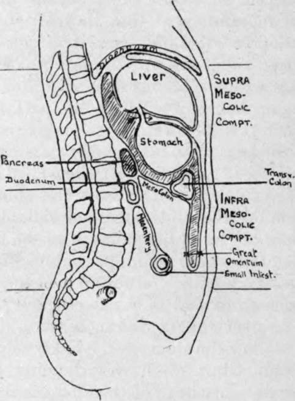

The Abdominal Cavity
Description
This section is from the book "Surgical Anatomy", by John A. C. MacEwen. Also available from Amazon: Surgical Anatomy.
The Abdominal Cavity
The peritoneum is a single closed serous sac, composed of a thin fibrous layer, lined on its inner surface with endothelium. This closed sac is divided into two portions-a greater sac and a lesser sac-by a constricted neck (called the foramen of Winslow), through which the two portions communicate. This neck is twisted, so that the small sac lies behind the great sac; and below the level of the stomach, which separates them, the great sac is invaginated by a process of the small sac, the two together (invaginated and invaginating) forming the great omentum. This sac has no contents, the various surfaces being practically in contact, save for a little serous fluid which lubricates them, and renders the free movements of the viscera possible. The greater sac lines the greater part of the abdominal cavity. That portion lining the anterior abdominal wall is comparatively smooth and free from interruption, whereas that lining the posterior abdominal wall is thrown into folds by the various viscera which, carrying it before them, project into and completely fill the abdominal cavity, and thus, so to speak, obliterate the cavity of the peritoneal sac. The abdominal viscera are either fixed directly by connective tissue to the posterior abdominal wall, or are suspended from it by bloodvessels. Where viscera are fixed directly to the posterior abdominal wall, the peritoneum is generally pushed before or invaginated by them, the reflections of the peritoneum from the abdominal wall to a viscus being frequently termed ligaments. The organs vary very much in the extent to which they are covered by peritoneum, the spleen having a very complete coat, while the kidney and pancreas have only partial coats, it being possible, therefore, for abscesses in connection with these latter organs to discharge externally without involving the peritoneal cavity. In this connection it is interesting to note that while the interior of the peritoneal cavity is very prone to microbic infection, the exterior is very resistant, and this holds true even of the serous peritoneal coat of bowel, etc. Thus, a large pelvic abscess may fail to cause peritonitis, and a perforating ulcer of the appendix may find its progress stopped by the thin serous layer. As an example of the suspended type of viscus the bowel may be taken. It is projected into the abdominal cavity, invaginating the posterior layer of the peritoneal sac, and carrying a visceral layer of peritoneum before it, which is then considered as the serous coat of that viscus, and is no longer spoken of as the peritoneum. Covering over the various branches of the bloodvessels, which, arising from the aorta, run forwards to supply the bowel, is a double layer of invaginated peritoneum, which is called the mesentery. Thus it will be understood that all viscera lie outside the cavity of the peritoneum, which forms a covering for all the viscera which are projected into it. There is one exception to the statement that the peritoneum is a closed sac-the Fallopian tubes open into it.
The foramen of Winslow, through which the greater sac communicates with the less, is situated below and behind the portal fissure of the liver, while the first part of the duodenum and hepatic artery lie below it. Owing to a twist at the foramen of Winslow, the small sac is situated behind the large one, and occupies the space between the posterior wall of the stomach and the posterior abdominal wall. Above this point it extends upwards between the liver and abdominal wall, but while crossing from the upper border of the stomach to the under surface of the liver its anterior wall comes in contact with the posterior wall of the great sac (which comes up over the anterior surface of the stomach to extend to the liver), and these two layers together are called the lesser omentum (gastro-hepatic omentum). Below the stomach the lesser sac invaginates the greater sac, and thus we have extending from the lower border or greater curvature of the stomach a double layer of peritoneum, the descending portion being composed of an anterior layer of great sac and a posterior of lesser sac. This double layer extends down a variable distance in front of the other viscera, and then, turning on itself, runs up again, the ascending and descending layers being in close contact with one another. When the two ascending layers meet the transverse colon, they split to enclose it, but again unite to form what is called the transverse mesocolon. The long process, composed of layers of both sacs, is called the great omentum (gastrocolic). It forms an apron in front of the small intestine of very variable length, is generally loaded with fat, and is of considerable importance surgically. Thus, a very long omentum is generally considered a predisposing, if not actual, cause of hernia, as it is frequently found to precede the appearance of the bowel, not infrequently forming an omental sac over the bowel, which may thus be said to be ' encouraged ' by the omentum forming a path for it. Sometimes also a hernial protrusion contains only omentum, no bowel being present (epiplocele). Lockwood states that under the age of forty-five the omentum can rarely be drawn down below the pubic spine, whereas in later years it can be. Venous congestion frequently produces great increase in the size of a herniated omental mass, and the same cause occasionally produces a varicose condition of its veins, the mass therefore simulating varicocele. On the other hand, omentum has a very definite effect upon inflammatory affections of the abdominal cavity. In many cases it takes a large share in walling off suppurative processes, and thus protecting the general peritoneal surface from infection. In some cases the extremity
of the omentum may become adherent to some of the pelvic organs, and subsequently, owing to movements of the intestine, may become twisted into a rather tense cord, under which a loop of bowel may become strangulated. Bowel may also become strangulated by passing through an aperture in the mesentery or omentum. Where any structure becomes adherent to the omentum, it may derive a large proportion of its blood-supply from it. This may occur in the case of the sac of an omental hernia ; in ovarian tumour, with twisted pedicle, etc. In abdominal wounds the omentum may protrude, block up the opening, and so prevent the escape of blood.
Fig. 24.- Diagram of Peritoneum, its Sacs and Folds.
Lesser sac is shaded. Arrow through foramen of Winslow. Note how transverse colon with its mesocolon forms a diaphragm dividing the abdominal cavity into supra- and infra-mesocolic compartments, the stomach occupying the former and the small intestine the latter.
It has been stated above that the stomach is interposed between the two sacs, the great sac lying in front and the smaller behind. This relationship of the posterior wall of the stomach to the lesser sac is a point of much surgical importance, as, when a gastric ulcer ruptures on the posterior wall, it opens into the lesser sac, and the escaping contents are much circumscribed, adhesions generally forming rapidly, which limit the process ; whereas, when the rupture occurs on the anterior wall the large anterior sac and contained viscera are very apt to be affected, adhesions occurring here much less readily.
Continue to: